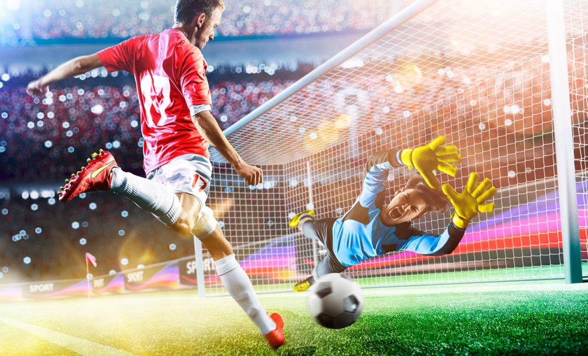

Inicio* Fútbol* Voleibol* Baloncesto* Tenis*
Deportes
 El deporte es una actividad, normalmente de carácter competitivo y que puede mejorar la condición física, de quien lo practica, y además tiene propiedades que lo diferencian del juego.
El deporte es una actividad, normalmente de carácter competitivo y que puede mejorar la condición física, de quien lo practica, y además tiene propiedades que lo diferencian del juego.
La Real academia española, en su diccionario de la lengua española, define deporte como una «actividad física, ejercida como juego o competición, cuya práctica supone entrenamiento y sujeción a normas»; también, en una segunda acepción, más amplia, como «recreación, pasatiempo, placer, diversión o ejercicio físico, por lo común al aire libre». Por otra parte, la Carta Europea del deporte lo define como: «Todas las formas de actividades físicas que mediante una participación organizada o no, tienen como objetivo la expresión o la mejora de la condición física y psíquica, el desarrollo de las relaciones sociales o la obtención de resultados en competición de todos los niveles».
Institucionalmente, para que una actividad sea considerada deporte, debe estar avalada por estructuras administrativas y de control que se encargan de reglamentarlo (las organizaciones deportivas). El hecho de que alguna actividad no esté reconocida institucionalmente como deporte, no impide que pueda estarlo popularmente, como ocurre con el deporte rural o con los deportes alternativos.
Fútbol
Deporte de equipo jugado entre dos conjuntos de once jugadores cada uno y algunos árbitros que se ocupan de que las normas se cumplan correctamente. Es ampliamente considerado el deporte más popular del mundo, pues lo practican unas 270 millones de personas. También se le conoce como futbol asociación o fútbol asociación, nombre derivado de The Football Association, primera federación oficial del mundo en este deporte y que utilizó ese nombre para distinguirlo de otros deportes que incluyen la palabra "futbol" o "fútbol". En algunos países de habla inglesa también se le conoce como soccer, abreviatura de association, puesto que el nombre de football en esos países se asocia mayoritariamente a otros deportes con esa denominación (principalmente en Estados Unidos y Canadá, donde el nombre football aplica para el fútbol americano, un deporte totalmente distinto).
El terreno de juego es rectangular de césped natural o artificial, con una portería o arco a cada lado del campo. Se juega mediante una pelota que se debe desplazar a través del campo con cualquier parte del cuerpo que no sean los brazos o las manos, y mayoritariamente con los pies (de ahí su nombre). El objetivo es introducirla dentro de la portería o arco contrario, acción que se denomina marcar un gol. El equipo que logre más goles al cabo del partido, de una duración de 90 minutos, es el que resulta ganador del encuentro.
El juego moderno fue reinventado en Inglaterra tras la formación de la Football Association, cuyas reglas de 1863 son la base del deporte en la actualidad. El organismo rector del fútbol es la Federación Internacional de Fútbol Asociación, más conocida por su acrónimo FIFA. La competición internacional de fútbol más prestigiosa es la Copa Mundial de Fútbol, organizada cada cuatro años por dicho organismo. Este evento es el más famoso y el que cuenta con mayor cantidad de espectadores del mundo, doblando la audiencia de los Juegos Olímpicos.
Voleibol
Deporte que se juega con una pelota y en el que dos equipos, integrados por seis jugadores cada uno, se enfrentan sobre un área de juego separada por una red central. El objetivo del juego es pasar el balón por encima de la red, logrando que llegue al suelo del campo contrario mientras el equipo adversario intenta impedir simultáneamente que lo consiga, forzándolo a errar en su intento. Surge una fase de ataque en un equipo cuando intenta que el balón toque el suelo del campo contrario mientras que en el otro equipo surge una fase de defensa intentando impedirlo.
El balón debe ser tocado o impulsado con golpes limpios, pero no puede ser parado, sujetado, retenido o acompañado. Cada equipo dispone de un máximo de tres toques para devolver el balón al campo contrario (además del contacto del bloqueo). El balón se golpea normalmente con manos y brazos. Desde hace algunos años está permitido el contacto del balón con cualquier parte del cuerpo, incluidos los pies. Una de las características más peculiares del voleibol es que los jugadores tienen que ir rotando sus posiciones a medida que van consiguiendo puntos.
El deporte tuvo su origen en Estados Unidos en 1895, siendo hoy muy popular y practicándose en casi todo el mundo. Lo regula la Federación Internacional de Voleibol (FIVB) y en ella se encuentran representadas 220 naciones. Han encabezado los rankings de comienzos del siglo xxi Brasil, Estados Unidos, Italia y Rusia. La lista de naciones que lideran el deporte continúa con Japón, Serbia, Polonia, Cuba, República Dominicana, China y Alemania. De acuerdo con estimaciones de la FIVB, una sexta parte de las personas en todo el mundo participa en el voleibol, activamente o como espectador.
El voleibol es uno de los deportes donde mayor es la paridad entre las competiciones femeninas y masculinas, tanto por el nivel de la competencia como por la popularidad, presencia en los medios y público que sigue a los equipos.
Baloncesto
Deporte de equipo, jugado entre dos conjuntos de cinco jugadores cada uno durante cuatro períodos o cuartos de diez2 o doce minutos cada uno. El objetivo del equipo es anotar puntos introduciendo un balón por la canasta, un aro a 3,05 metros sobre la superficie de la pista de juego del que cuelga una red. La puntuación por cada canasta o cesta es de dos o tres puntos, dependiendo de la posición desde la que se efectúa el tiro a canasta, o de uno, si se trata de un tiro libre por una falta de un jugador contrario. El equipo ganador es el que obtiene el mayor número de puntos.
El contacto con la pelota se realiza con las manos. Los jugadores, también llamados baloncestistas, no pueden trasladarse sujetando la pelota, sino botándola contra el suelo. El equipo en posesión del balón o atacante, intenta anotar puntos mediante tiros, entradas a canasta o mates, mientras que el equipo defensor busca impedirlo robando la pelota o efectuando tapones. Cuando un tiro hacia la canasta fracasa, los jugadores de ambos equipos intentan atrapar el rebote.
James Naismith, un profesor canadiense de educación física, inventó el baloncesto en 1891 en la YMCA de Springfield, Massachusetts, Estados Unidos. El deporte ganó rápidamente popularidad y se expandió por las universidades y colegios norteamericanos a principios del siglo XX.
La Federación Internacional de Baloncesto (FIBA) surgió en 1932 y el deporte debutó en los Juegos Olímpicos de verano en 1936. En 1946 se fundó la principal liga profesional de los Estados Unidos, la National Basketball Association (NBA), donde se formaron grandes jugadores que contribuyeron a la creciente popularidad del baloncesto: Wilt Chamberlain y Bill Russell en los años 1960 y, posteriormente, Magic Johnson, Michael Jordan y LeBron James, estos dos últimos considerados por muchos como los dos mejores jugadores de la historia.
El baloncesto es uno de los deportes más practicados del mundo, con más de 450 millones de jugadores en 2013. Se juegan numerosas ligas y campeonatos en el mundo entero, sobre todo en Europa y más recientemente en Asia, donde el deporte ha despuntado en el siglo XXI. Las mujeres representan una buena parte de los practicantes, a pesar de una exposición menor en los medios del baloncesto femenino. Se han desarrollado algunas variantes, como el baloncesto en silla de ruedas para deportistas discapacitados, el streetball y el baloncesto 3x3. Existe una cultura específica surgida a partir del deporte que se expresa en la música, la literatura, el cine y los videojuegos.
Tenis
 El tenis, también llamado tenis de campo, es un deporte de raqueta practicado sobre una pista rectangular (compuesta por distintas superficies, las cuales pueden ser cemento, tierra batida o hierba), delimitada por líneas y dividida por una red.
El tenis, también llamado tenis de campo, es un deporte de raqueta practicado sobre una pista rectangular (compuesta por distintas superficies, las cuales pueden ser cemento, tierra batida o hierba), delimitada por líneas y dividida por una red.
Se disputa entre dos jugadores (individuales) o entre dos parejas (dobles). El objetivo del juego es lanzar una pelota golpeándola con la raqueta de modo que rebote en la otra cancha pasando la red dentro de los límites permitidos del campo del rival, procurando que este no pueda devolverla para conseguir un segundo rebote en el suelo y por ende un punto.
Las primeras referencias del tenis tienen lugar en Alemania, nombrado «Palmenspiel» (‘juego de palmas’), dado que al principio se golpeaba la pelota con la mano. Más tarde se empezaron a utilizar palos de golf. El tenis original se jugaba en pistas de hierba natural.
Se originó en Europa a finales del siglo XVIII y se expandió en un principio por los países angloparlantes, especialmente entre sus clases altas. En la actualidad el tenis se ha universalizado, y es jugado en casi todos los países del mundo. Desde 1926, con la creación del primer tour, es un deporte profesional. Es además un deporte olímpico desde los Juegos Olímpicos de Atenas 1896.